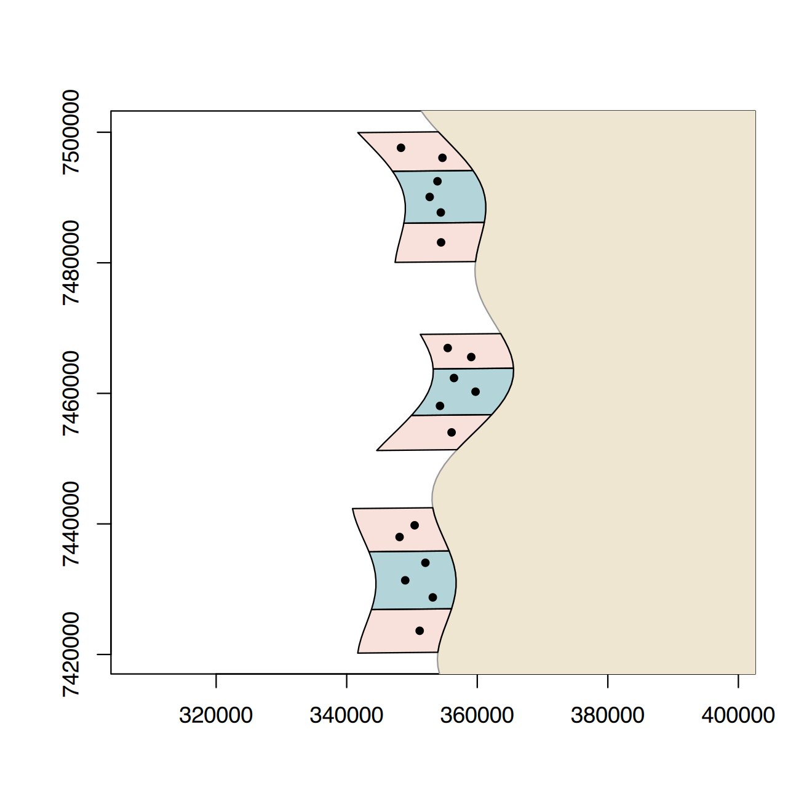
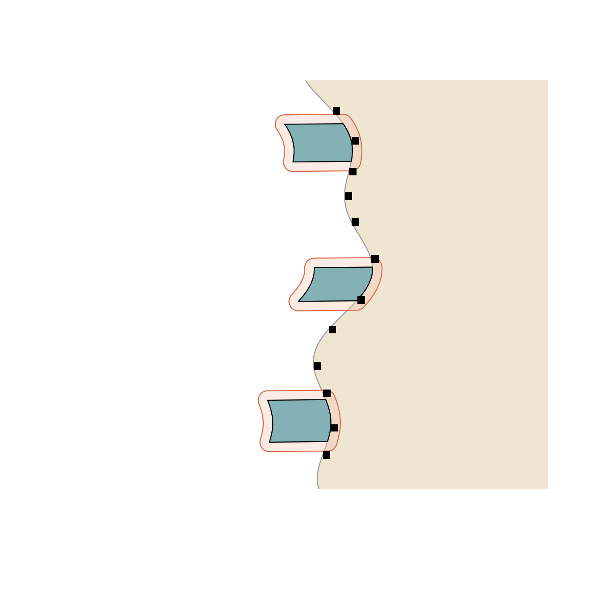

Data of this session (simulated). The GIS of the monitoring programme, prepared by the NGO GIS officer:
monitoring_gis.gpkg, a GeoPackage (one
file, several layers), in UTM zone 38S (metres):
land (the mainland, digitised from a satellite image),
mpa_zones (the 9 zones of the three MPAs as described in
their management plans: a central No-take zone between two Fishing
zones), reef_sites (the 18 monitoring sites, positions
taken with a GPS on the boat) and mangrove_plots (the 24
forest plots, GPS at the plot centre).villages_shp/villages.shp, a shapefile
in longitude/latitude (WGS84): the 12 villages of the
Intermediate level, digitised by another team — with another coordinate
system, as often in real life.Type: vector data — points (sites, plots, villages) and polygons (land, zones) with their attributes.
Données de cette séance (simulées). Le SIG du programme de suivi, préparé par le responsable SIG de l’ONG :
monitoring_gis.gpkg, un GeoPackage (un
seul fichier, plusieurs couches), en UTM zone 38S
(mètres) : land (la terre ferme, numérisée sur une image
satellite), mpa_zones (les 9 zones des trois AMP telles que
décrites dans leurs plans d’aménagement : une zone centrale No-take
entre deux zones Fishing), reef_sites (les 18 sites de
suivi, positions prises au GPS sur le bateau) et
mangrove_plots (les 24 placettes forestières, GPS au centre
de la placette).villages_shp/villages.shp, un
shapefile en longitude/latitude
(WGS84) : les 12 villages du niveau intermédiaire, numérisés
par une autre équipe — avec un autre système de coordonnées, comme
souvent dans la réalité.Type : données vecteur — points (sites, placettes, villages) et polygones (terre, zones) avec leurs attributs.
In sf (Pebesma 2018), a spatial layer is an ordinary
data frame with one extra column,
geometry, that holds the shape of each row: a
POINT, a LINESTRING or a POLYGON
(and their MULTI… versions). Everything you know about data
frames and dplyr still works.
Dans sf (Pebesma 2018), une couche spatiale est un
data frame ordinaire avec une colonne en plus,
geometry, qui contient la forme de chaque ligne : un
POINT, une LINESTRING (ligne) ou un
POLYGON (et leurs versions MULTI…). Tout ce
que vous savez des data frames et de dplyr fonctionne encore.
#> Driver: GPKG
#> Available layers:
#> layer_name geometry_type features fields crs_name
#> 1 land Polygon 1 1 WGS 84 / UTM zone 38S
#> 2 mpa_zones Multi Polygon 9 4 WGS 84 / UTM zone 38S
#> 3 reef_sites Point 18 6 WGS 84 / UTM zone 38S
#> 4 mangrove_plots Point 24 7 WGS 84 / UTM zone 38S#> Simple feature collection with 9 features and 4 fields
#> Geometry type: MULTIPOLYGON
#> Dimension: XY
#> Bounding box: xmin: 340891.7 ymin: 7420209 xmax: 365568 ymax: 7500064
#> Projected CRS: WGS 84 / UTM zone 38S
#> mpa zone part created geom
#> 1 Ankaramena Fishing north 2015 MULTIPOLYGON (((359067.1 74...
#> 2 Ankaramena No-take core 2015 MULTIPOLYGON (((361171.4 74...
#> 3 Ankaramena Fishing south 2015 MULTIPOLYGON (((359734 7480...
#> 4 Nosy Fasika Fishing north 2017 MULTIPOLYGON (((365472.4 74...
#> 5 Nosy Fasika No-take core 2017 MULTIPOLYGON (((365546.8 74...
#> 6 Nosy Fasika Fishing south 2017 MULTIPOLYGON (((357982.3 74...
#> 7 Tanjona Fishing north 2019 MULTIPOLYGON (((355302.6 74...
#> 8 Tanjona No-take core 2019 MULTIPOLYGON (((356660.5 74...
#> 9 Tanjona Fishing south 2019 MULTIPOLYGON (((353962.5 74...#> [1] "sf" "data.frame"#> [1] MULTIPOLYGON
#> 18 Levels: GEOMETRY POINT LINESTRING POLYGON MULTIPOINT MULTILINESTRING ... TRIANGLEFunctions and arguments used here
| Function / argument | What it does | Value it expects |
|---|---|---|
st_layers(dsn) |
lists the layers of a GeoPackage (name, geometry type, number of features) | path of the file (dsn = data source name) |
st_read(dsn, layer, quiet) |
reads one layer as an sf object (a data frame + a geometry column) | |
layer |
which layer of the file (needed when there are several) | the layer name in quotes |
quiet |
TRUE hides the reading summary |
TRUE / FALSE (default) |
st_geometry_type(x, by_geometry) |
POINT, LINESTRING, POLYGON, MULTIPOLYGON…;
by_geometry = FALSE = one answer for the whole layer |
Fonctions et arguments utilisés ici
| Fonction / argument | Ce qu’il fait | Valeur attendue |
|---|---|---|
st_layers(dsn) |
liste les couches d’un GeoPackage (nom, type de géométrie, nombre d’entités) | chemin du fichier (dsn = data source
name) |
st_read(dsn, layer, quiet) |
lit une couche sous forme d’objet sf (un data frame + une colonne de géométrie) | |
layer |
quelle couche du fichier (nécessaire quand il y en a plusieurs) | le nom de la couche entre guillemets |
quiet |
TRUE cache le résumé de lecture |
TRUE / FALSE (défaut) |
st_geometry_type(x, by_geometry) |
POINT, LINESTRING, POLYGON, MULTIPOLYGON… ;
by_geometry = FALSE = une seule réponse pour toute la
couche |
land <- st_read(gpkg, layer = "land", quiet = TRUE)
sites <- st_read(gpkg, layer = "reef_sites", quiet = TRUE)
plot(st_geometry(land), col = "#efe6d2", border = "grey60", axes = TRUE,
xlim = st_bbox(zones)[c(1, 3)], ylim = st_bbox(zones)[c(2, 4)])
plot(st_geometry(zones), col = ifelse(zones$zone == "No-take", "#1b7f8c55", "#d9694a33"), add = TRUE)
plot(st_geometry(sites), pch = 19, cex = 0.7, add = TRUE)
Functions and arguments used here
| Function / argument | What it does | Value it expects |
|---|---|---|
st_geometry(x) |
only the geometry column (otherwise plot() draws one
map per attribute) |
an sf object |
st_bbox(x) |
the bounding box: xmin, ymin,
xmax, ymax; [c(1, 3)] = the x
limits |
an sf object |
plot(..., col, border, axes, add) |
base R plot (Beginner Session 7); axes = TRUE draws the
coordinates; add = TRUE draws on the
previous map |
|
"#1b7f8c55" |
a hex colour with 2 more characters = transparency (00
invisible, ff opaque) |
Fonctions et arguments utilisés ici
| Fonction / argument | Ce qu’il fait | Valeur attendue |
|---|---|---|
st_geometry(x) |
seulement la colonne de géométrie (sinon plot() dessine
une carte par attribut) |
un objet sf |
st_bbox(x) |
le rectangle englobant : xmin, ymin,
xmax, ymax ; [c(1, 3)] = les
limites en x |
un objet sf |
plot(..., col, border, axes, add) |
graphique de R de base (séance 7 du niveau débutant) ;
axes = TRUE dessine les coordonnées ;
add = TRUE dessine sur la carte
précédente |
|
"#1b7f8c55" |
une couleur hexadécimale avec 2 caractères de plus = transparence
(00 invisible, ff opaque) |
plot(st_geometry(x)) is the quickest look. Without
st_geometry(), plot(zones) draws one small map
per column. Nice maps come in Session A7.
plot(st_geometry(x)) est le coup d’œil le plus rapide.
Sans st_geometry(), plot(zones) dessine une
petite carte par colonne. Les belles cartes viennent à la séance A7.
| Format | Files | Notes |
|---|---|---|
GeoPackage .gpkg |
one file, several layers | modern, recommended; long column names, any encoding |
Shapefile .shp |
4+ files that must stay together: .shp
(shapes), .shx (index), .dbf (attributes),
.prj (CRS) |
very common but old: names cut to 10 characters, one layer per file.
Never send the .shp alone! |
GeoJSON .geojson |
one text file | web maps; always longitude/latitude |
| CSV with coordinates | one table | GPS exports, field sheets: use st_as_sf() |
| Format | Fichiers | Remarques |
|---|---|---|
GeoPackage .gpkg |
un fichier, plusieurs couches | moderne, recommandé ; noms de colonnes longs, tout encodage |
Shapefile .shp |
4+ fichiers qui doivent rester ensemble :
.shp (formes), .shx (index), .dbf
(attributs), .prj (SCR) |
très courant mais ancien : noms tronqués à 10 caractères, une couche
par fichier. N’envoyez jamais le .shp seul ! |
GeoJSON .geojson |
un fichier texte | cartes web ; toujours en longitude/latitude |
| CSV avec coordonnées | un tableau | exports GPS, fiches de terrain : utilisez
st_as_sf() |
villages <- st_read("data/advanced/villages_shp/villages.shp", quiet = TRUE) # read the .shp: sf finds the others
head(villages, 3)#> Simple feature collection with 3 features and 3 fields
#> Geometry type: POINT
#> Dimension: XY
#> Bounding box: xmin: 43.6177 ymin: -22.7455 xmax: 43.6555 ymax: -22.6293
#> Geodetic CRS: WGS 84
#> village zone n_farmers geometry
#> 1 Ankarabe North 7 POINT (43.6177 -22.6293)
#> 2 Antsiraka North 9 POINT (43.6555 -22.6869)
#> 3 Mahavelo North 14 POINT (43.6501 -22.7455)# A CSV with longitude / latitude -> spatial points
plots_csv <- read.csv("data/advanced/mangrove_plots.csv")
plots <- st_as_sf(plots_csv, coords = c("lon", "lat"), crs = 4326) # 4326 = WGS84 lon/lat
plots#> Simple feature collection with 24 features and 5 fields
#> Geometry type: POINT
#> Dimension: XY
#> Bounding box: xmin: 43.56959 ymin: -23.13706 xmax: 43.659 ymax: -22.6223
#> Geodetic CRS: WGS 84
#> First 10 features:
#> plot_id patch mpa status survey_date geometry
#> 1 M101 Ankarabe Ankaramena reference 2025-05-11 POINT (43.63852 -22.65646)
#> 2 M102 Ankarabe Ankaramena reference 2025-05-19 POINT (43.62766 -22.64417)
#> 3 M103 Ankarabe Ankaramena harvested 2025-05-26 POINT (43.61049 -22.62406)
#> 4 M104 Ankarabe Ankaramena harvested 2025-05-28 POINT (43.61166 -22.62538)
#> 5 M105 Ankarabe Ankaramena restored 2025-05-05 POINT (43.61687 -22.63417)
#> 6 M106 Ankarabe Ankaramena restored 2025-05-05 POINT (43.6097 -22.6223)
#> 7 M107 Ankarabe Ankaramena reference 2025-05-26 POINT (43.63394 -22.64892)
#> 8 M108 Ankarabe Ankaramena harvested 2025-05-12 POINT (43.61879 -22.63657)
#> 9 M201 Ambalakely Nosy Fasika reference 2025-05-11 POINT (43.64482 -22.83314)
#> 10 M202 Ambalakely Nosy Fasika reference 2025-05-22 POINT (43.64791 -22.8404)Functions and arguments used here
| Function / argument | What it does | Value it expects |
|---|---|---|
st_read("…/villages.shp") |
a shapefile is read through its .shp; the
.dbf, .shx, .prj must be in the
same folder |
|
st_as_sf(x, coords, crs) |
table with coordinate columns → sf points (Intermediate I11) | |
coords |
x then y: longitude first | c("lon", "lat") |
crs |
the coordinate system in which the numbers are written (it does not convert) | an EPSG code, e.g. 4326 |
Fonctions et arguments utilisés ici
| Fonction / argument | Ce qu’il fait | Valeur attendue |
|---|---|---|
st_read("…/villages.shp") |
un shapefile se lit par son .shp ; les
.dbf, .shx, .prj doivent être
dans le même dossier |
|
st_as_sf(x, coords, crs) |
tableau avec colonnes de coordonnées → points sf (intermédiaire I11) | |
coords |
x puis y : longitude d’abord | c("lon", "lat") |
crs |
le système de coordonnées dans lequel les nombres sont écrits (il ne convertit pas) | un code EPSG, ex. 4326 |
A CRS says what the numbers of the coordinates mean. Two families:
Each CRS has an EPSG code. Two layers must be in the
same CRS before you combine them:
st_transform() converts.
Un SCR dit ce que signifient les nombres des coordonnées. Deux familles :
Chaque SCR a un code EPSG. Deux couches doivent être
dans le même SCR avant d’être combinées :
st_transform() convertit.
#> [1] 32738#> [1] 4326#> [1] "m"villages_utm <- st_transform(villages, st_crs(zones)) # same CRS as the zones
plots_utm <- st_transform(plots, st_crs(zones))
st_coordinates(villages_utm)[1:2, ] # now in metres (Easting, Northing)#> X Y
#> [1,] 357946.1 7496856
#> [2,] 361888.9 7490515Functions and arguments used here
| Function / argument | What it does | Value it expects |
|---|---|---|
st_crs(x) |
the CRS of a layer; $epsg = its EPSG code,
$units = its unit |
an sf object |
st_transform(x, crs) |
converts the coordinates into another CRS | a layer; an EPSG code or st_crs(other_layer) |
st_coordinates(x) |
a matrix of the coordinates (X, Y) |
an sf object |
Fonctions et arguments utilisés ici
| Fonction / argument | Ce qu’il fait | Valeur attendue |
|---|---|---|
st_crs(x) |
le SCR d’une couche ; $epsg = son code EPSG,
$units = son unité |
un objet sf |
st_transform(x, crs) |
convertit les coordonnées dans un autre SCR | une couche ; un code EPSG ou st_crs(autre_couche) |
st_coordinates(x) |
une matrice des coordonnées (X, Y) |
un objet sf |
Two arguments with the same name, two different jobs:
crs in st_as_sf() declares
the system of the numbers you have; crs in
st_transform() gives the system you
want.
Deux arguments du même nom, deux rôles différents : crs
dans st_as_sf() déclare le système des
nombres que vous avez ; crs dans
st_transform() donne le système que vous
voulez.
st_crs() returning NA means the CRS is
unknown (e.g. a shapefile without its
.prj). Do not guess with st_transform():
set the CRS you know is right with
st_set_crs(x, 4326) (it changes the label, not the
numbers), then transform if needed. A classic error is mixing them up:
coordinates in degrees declared as metres put all your points a few
metres from the origin of the projection — far from Madagascar.
st_crs() qui renvoie NA signifie que le SCR
est inconnu (par ex. un shapefile sans son
.prj). Ne devinez pas avec st_transform() :
déclarez le SCR que vous savez juste avec
st_set_crs(x, 4326) (cela change l’étiquette, pas les
nombres), puis transformez si besoin. Une erreur classique est de les
confondre : des coordonnées en degrés déclarées en mètres placent tous
vos points à quelques mètres de l’origine de la projection — loin de
Madagascar.
#> Simple feature collection with 3 features and 2 fields
#> Geometry type: MULTIPOLYGON
#> Dimension: XY
#> Bounding box: xmin: 343409.2 ymin: 7426876 xmax: 365568 ymax: 7494134
#> Projected CRS: WGS 84 / UTM zone 38S
#> mpa zone geom
#> 1 Ankaramena No-take MULTIPOLYGON (((361171.4 74...
#> 2 Nosy Fasika No-take MULTIPOLYGON (((365546.8 74...
#> 3 Tanjona No-take MULTIPOLYGON (((356660.5 74...# summarise() on groups MERGES the geometries ("dissolve"): one polygon per MPA
mpas <- zones %>% group_by(mpa) %>% summarise(n_zones = n(), .groups = "drop")
mpas#> Simple feature collection with 3 features and 2 fields
#> Geometry type: POLYGON
#> Dimension: XY
#> Bounding box: xmin: 340891.7 ymin: 7420209 xmax: 365568 ymax: 7500064
#> Projected CRS: WGS 84 / UTM zone 38S
#> # A tibble: 3 × 3
#> mpa n_zones geom
#> <chr> <int> <POLYGON [m]>
#> 1 Ankaramena 3 ((361039.3 7485971, 361002.9 7485765, 360955.1 7485558, 360905.4 74853…
#> 2 Nosy Fasika 3 ((362037.9 7456549, 361864.8 7456365, 361691.8 7456180, 361518.7 74559…
#> 3 Tanjona 3 ((355985.6 7426770, 355905.2 7426540, 355824.9 7426310, 355744.6 74260…#> [1] "data.frame"Functions and arguments used here
| Function / argument | What it does | Value it expects |
|---|---|---|
filter(), select(),
group_by(), summarise() |
dplyr verbs (Beginner Session 8) work on sf objects; the geometry is
kept, and summarise() merges it per group |
|
st_drop_geometry(x) |
removes the geometry: a plain data frame (faster for tables) | an sf object |
Fonctions et arguments utilisés ici
| Fonction / argument | Ce qu’il fait | Valeur attendue |
|---|---|---|
filter(), select(),
group_by(), summarise() |
les verbes dplyr (séance 8 du niveau débutant) marchent sur les
objets sf ; la géométrie est gardée, et summarise() la
fusionne par groupe |
|
st_drop_geometry(x) |
retire la géométrie : un simple data frame (plus rapide pour les tableaux) | un objet sf |
To add field results to the sites, join a normal table by its key — the spatial object must come first to stay spatial (Intermediate, Session I3):
Pour ajouter des résultats de terrain aux sites, joignez un tableau normal par sa clé — l’objet spatial doit venir en premier pour rester spatial (intermédiaire, séance I3) :
reef <- read.csv("data/advanced/reef_monitoring.csv")
cover25 <- reef %>% filter(year == 2025) %>% group_by(site_id) %>%
summarise(hard_coral = mean(hard_coral), .groups = "drop")
sites25 <- left_join(sites, cover25, by = "site_id")
head(sites25, 3)#> Simple feature collection with 3 features and 7 fields
#> Geometry type: POINT
#> Dimension: XY
#> Bounding box: xmin: 352712.6 ymin: 7487710 xmax: 354416.2 ymax: 7492489
#> Projected CRS: WGS 84 / UTM zone 38S
#> site_id mpa zone lon lat depth_m hard_coral geom
#> 1 R01 Ankaramena No-take 43.57797 -22.6684 7.1 42.90000 POINT (353904 7492489)
#> 2 R02 Ankaramena No-take 43.56615 -22.6900 6.6 44.66667 POINT (352712.6 7490085)
#> 3 R03 Ankaramena No-take 43.58251 -22.7116 3.5 50.43333 POINT (354416.2 7487710)Functions and arguments used here
| Function / argument | What it does | Value it expects |
|---|---|---|
left_join(sites, cover25, by) |
attribute join (Intermediate I3): the sf object must be first to stay spatial |
Fonctions et arguments utilisés ici
| Fonction / argument | Ce qu’il fait | Valeur attendue |
|---|---|---|
left_join(sites, cover25, by) |
jointure attributaire (intermédiaire I3) : l’objet sf doit être en premier pour rester spatial |
#> Units: [m^2]
#> [1] 73751080 98287894 73682546zones$area_km2 <- as.numeric(st_area(zones)) / 1e6 # plain number in km^2
zones %>% st_drop_geometry() %>% group_by(zone) %>% summarise(total_km2 = round(sum(area_km2), 1))#> # A tibble: 2 × 2
#> zone total_km2
#> <chr> <dbl>
#> 1 Fishing 441.
#> 2 No-take 294.Functions and arguments used here
| Function / argument | What it does | Value it expects |
|---|---|---|
st_area(x) |
area of each polygon, with its unit
([m^2]) taken from the CRS |
polygons |
as.numeric(x) |
removes the unit: a plain number you can divide (/ 1e6
→ km²) |
Fonctions et arguments utilisés ici
| Fonction / argument | Ce qu’il fait | Valeur attendue |
|---|---|---|
st_area(x) |
surface de chaque polygone, avec son unité
([m^2]) tirée du SCR |
des polygones |
as.numeric(x) |
retire l’unité : un simple nombre que l’on peut diviser
(/ 1e6 → km²) |
#> [1] 18 12sites$nearest_village <- villages_utm$village[apply(d, 1, which.min)]
sites$dist_village_km <- round(apply(d, 1, min) / 1000, 2)
sites$dist_land_km <- round(as.numeric(st_distance(sites, land)) / 1000, 2) # distance to the coast
head(st_drop_geometry(sites)[, c("site_id", "nearest_village", "dist_village_km", "dist_land_km")], 4)#> site_id nearest_village dist_village_km dist_land_km
#> 1 R01 Ankarabe 5.95 5.31
#> 2 R02 Ankarabe 8.56 7.75
#> 3 R03 Mahavelo 7.89 6.82
#> 4 R04 Ankarabe 9.66 5.90Functions and arguments used here
| Function / argument | What it does | Value it expects |
|---|---|---|
st_distance(x, y) |
matrix of the distances between every feature of x
(rows) and every feature of y (columns), in the unit of the
CRS |
two layers in the same CRS |
apply(d, 1, which.min) |
for each row (1, Beginner Session 4): the column of the
smallest distance = the nearest village |
Fonctions et arguments utilisés ici
| Fonction / argument | Ce qu’il fait | Valeur attendue |
|---|---|---|
st_distance(x, y) |
matrice des distances entre chaque entité de x (lignes)
et chaque entité de y (colonnes), dans l’unité du SCR |
deux couches dans le même SCR |
apply(d, 1, which.min) |
pour chaque ligne (1, séance 4 du niveau débutant) : la
colonne de la plus petite distance = le village le plus proche |
Areas and distances are only correct in a projected CRS — or with longitude/latitude, where sf uses the s2 spherical library automatically. In practice: transform to UTM, measure, and you get metres you can trust.
Surfaces et distances ne sont justes que dans un SCR projeté — ou en longitude/latitude, où sf utilise automatiquement la bibliothèque sphérique s2. En pratique : transformez en UTM, mesurez, et vous obtenez des mètres fiables.
| Function | Result |
|---|---|
st_buffer(x, 2000) |
a zone of 2 km around each feature |
st_union(x) |
all features merged into one |
st_intersection(x, y) |
the parts of x inside y (with attributes
of both) |
st_difference(x, y) |
the parts of x outside y |
st_centroid(x) |
the centre of each polygon |
st_crop(x, bbox) |
cut to a rectangle |
| Fonction | Résultat |
|---|---|
st_buffer(x, 2000) |
une zone de 2 km autour de chaque entité |
st_union(x) |
toutes les entités fusionnées en une |
st_intersection(x, y) |
les parties de x à l’intérieur de y (avec
les attributs des deux) |
st_difference(x, y) |
les parties de x hors de y |
st_centroid(x) |
le centre de chaque polygone |
st_crop(x, bbox) |
découper selon un rectangle |
no_take <- zones %>% filter(zone == "No-take") %>% st_union() # one geometry: all No-take zones
belt <- st_buffer(no_take, 2000) # 2 km around them (m: UTM)
belt_land <- st_intersection(belt, st_union(land)) # the part of the belt on land
round(as.numeric(st_area(belt_land)) / 1e6, 1) # km2 of land within 2 km of a No-take zone#> [1] 75.7plot(st_geometry(land), col = "#efe6d2", border = "grey60",
xlim = st_bbox(zones)[c(1, 3)], ylim = st_bbox(zones)[c(2, 4)])
plot(belt, col = "#f3c3b255", border = "#d9694a", add = TRUE)
plot(no_take, col = "#1b7f8c88", add = TRUE)
plot(st_geometry(villages_utm), pch = 15, col = "black", add = TRUE)
Functions and arguments used here
| Function / argument | What it does | Value it expects |
|---|---|---|
st_union(x) |
merges all features into one geometry | a layer |
st_buffer(x, dist) |
zone of width dist around the features, in the unit of
the CRS (metres in UTM; never in degrees) |
a layer; a number |
st_intersection(x, y) |
the parts of x that are inside y |
two layers in the same CRS |
Fonctions et arguments utilisés ici
| Fonction / argument | Ce qu’il fait | Valeur attendue |
|---|---|---|
st_union(x) |
fusionne toutes les entités en une seule géométrie | une couche |
st_buffer(x, dist) |
zone de largeur dist autour des entités, dans l’unité
du SCR (mètres en UTM ; jamais en degrés) |
une couche ; un nombre |
st_intersection(x, y) |
les parties de x qui sont dans y |
deux couches dans le même SCR |
A predicate answers a yes/no question between two
layers: st_intersects(), st_within(),
st_contains(), st_is_within_distance(). A
spatial join st_join(x, y) adds to each
feature of x the attributes of the features of
y it touches — like left_join(), but the key
is the position.
Un prédicat répond par oui/non à une question entre
deux couches : st_intersects(), st_within(),
st_contains(), st_is_within_distance(). Une
jointure spatiale st_join(x, y) ajoute à
chaque entité de x les attributs des entités de
y qu’elle touche — comme left_join(), mais la
clé est la position.
# Which villages are within 2 km of a No-take zone?
near <- lengths(st_intersects(villages_utm, belt)) > 0 # TRUE/FALSE for each village
villages_utm$village[near]#> [1] "Antsiraka" "Ampasimena" "Befasy" "Andrevobe" "Tsimanjaka"# In which MPA zone is each mangrove plot? (plots are on land: none!)
table(lengths(st_intersects(plots_utm, zones)))#>
#> 0
#> 24# Spatial join: zone and MPA of each reef site, read from the polygons
sites_j <- st_join(select(sites, site_id), select(zones, mpa_poly = mpa, zone_poly = zone))
head(st_drop_geometry(sites_j), 4)#> site_id mpa_poly zone_poly
#> 1 R01 Ankaramena No-take
#> 2 R02 Ankaramena No-take
#> 3 R03 Ankaramena No-take
#> 4 R04 Ankaramena Fishing# Count points per polygon
zones$n_sites <- lengths(st_intersects(zones, sites))
st_drop_geometry(zones)[, c("mpa", "zone", "n_sites")]#> mpa zone n_sites
#> 1 Ankaramena Fishing 2
#> 2 Ankaramena No-take 3
#> 3 Ankaramena Fishing 1
#> 4 Nosy Fasika Fishing 2
#> 5 Nosy Fasika No-take 3
#> 6 Nosy Fasika Fishing 1
#> 7 Tanjona Fishing 2
#> 8 Tanjona No-take 3
#> 9 Tanjona Fishing 1Functions and arguments used here
| Function / argument | What it does | Value it expects |
|---|---|---|
st_intersects(x, y) |
for each feature of x, the list of the features of
y it touches |
two layers |
lengths(list) |
the length of each element of a list: here the number of features
touched (> 0 = touches at least one) |
a list |
st_join(x, y, join = st_intersects) |
spatial join: adds to x the attributes of the features
of y at the same place |
two sf objects |
select(zones, mpa_poly = mpa) |
select() can rename while selecting:
new = old |
Fonctions et arguments utilisés ici
| Fonction / argument | Ce qu’il fait | Valeur attendue |
|---|---|---|
st_intersects(x, y) |
pour chaque entité de x, la liste des entités de
y qu’elle touche |
deux couches |
lengths(list) |
la longueur de chaque élément d’une liste : ici le nombre d’entités
touchées (> 0 = en touche au moins une) |
une liste |
st_join(x, y, join = st_intersects) |
jointure spatiale : ajoute à x les attributs des
entités de y au même endroit |
deux objets sf |
select(zones, mpa_poly = mpa) |
select() peut renommer en sélectionnant :
nouveau = ancien |
Try it. With
st_join(villages_utm, select(zones, mpa), join = st_is_within_distance, dist = 3000),
find for each village the MPA that is less than 3 km away. Which village
has no MPA within 3 km? Why can a village appear
twice?
À vous. Avec
st_join(villages_utm, select(zones, mpa), join = st_is_within_distance, dist = 3000),
trouvez pour chaque village l’AMP qui est à moins de 3 km. Quel village
n’a aucune AMP à moins de 3 km ? Pourquoi un village
peut-il apparaître deux fois ?
st_write(sites25, here::here("data", "derived", "reef_sites_2025.gpkg"), delete_dsn = TRUE) # overwrite
st_write(belt, here::here("data", "derived", "analysis.gpkg"), layer = "no_take_2km", append = FALSE)
# for a colleague who only uses Excel: coordinates as columns
out <- cbind(st_drop_geometry(sites25), st_coordinates(st_transform(sites25, 4326)))
write.csv(out, here::here("outputs", "tables", "reef_sites_2025_lonlat.csv"), row.names = FALSE)Functions and arguments used here
| Function / argument | What it does | Value it expects |
|---|---|---|
st_write(obj, dsn, layer, delete_dsn, append) |
writes a layer; the format follows the extension
(.gpkg, .shp, .geojson) |
|
delete_dsn |
TRUE deletes the whole file before
writing |
TRUE / FALSE |
append |
FALSE replaces the layer if it exists
(other layers of the GeoPackage are kept); TRUE adds
rows |
TRUE / FALSE |
cbind(a, b) |
puts the attribute table and the coordinates side by side (Beginner Session 4) |
Fonctions et arguments utilisés ici
| Fonction / argument | Ce qu’il fait | Valeur attendue |
|---|---|---|
st_write(obj, dsn, layer, delete_dsn, append) |
écrit une couche ; le format suit l’extension (.gpkg,
.shp, .geojson) |
|
delete_dsn |
TRUE supprime tout le fichier avant
d’écrire |
TRUE / FALSE |
append |
FALSE remplace la couche si elle
existe (les autres couches du GeoPackage sont gardées) ;
TRUE ajoute des lignes |
TRUE / FALSE |
cbind(a, b) |
met côte à côte la table attributaire et les coordonnées (séance 4 du niveau débutant) |
All these files open in QGIS (free GIS software): R does the analysis reproducibly, QGIS is handy to look, check and draw by hand.
Tous ces fichiers s’ouvrent dans QGIS (logiciel SIG libre) : R fait l’analyse de façon reproductible, QGIS est pratique pour regarder, vérifier et dessiner à la main.
Script R/05_gis.R in your reef-monitoring
project (copy monitoring_gis.gpkg and
villages_shp/ into data/raw/).
data/derived/reef_sites_2025.gpkg. Open it in QGIS if you
have it.Script R/05_gis.R dans votre projet
reef-monitoring (copiez monitoring_gis.gpkg et
villages_shp/ dans data/raw/).
data/derived/reef_sites_2025.gpkg. Ouvrez-le dans QGIS si
vous l’avez.st_area() returns values with units:
use as.numeric() before dividing by 1e6. For question 4,
merge the No-take zones with st_union() before
st_buffer(), then
lengths(st_intersects(villages, buffer)) > 0. For
question 5, min(st_distance(site, villages)).
st_area() renvoie des valeurs avec
unités : utilisez as.numeric() avant de diviser
par 1e6. Pour la question 4, fusionnez les zones No-take avec
st_union() avant st_buffer(), puis
lengths(st_intersects(villages, tampon)) > 0. Pour la
question 5, min(st_distance(site, villages)).
library(sf); library(dplyr); library(here)
gpkg <- here("data", "raw", "monitoring_gis.gpkg")
st_layers(gpkg) # 1: 4 layers
zones <- st_read(gpkg, "mpa_zones"); land <- st_read(gpkg, "land"); sites <- st_read(gpkg, "reef_sites")
st_crs(zones)$epsg # 1: 32738
zones$area_km2 <- as.numeric(st_area(zones)) / 1e6
zones %>% st_drop_geometry() %>% group_by(zone) %>% summarise(sum(area_km2)) # 2
zones %>% st_drop_geometry() %>% group_by(mpa) %>% summarise(sum(area_km2)) # 3
villages <- st_transform(st_read(here("data", "raw", "villages_shp", "villages.shp")), st_crs(zones))
belt <- st_buffer(st_union(filter(zones, zone == "No-take")), 2000)
sum(lengths(st_intersects(villages, belt)) > 0) # 4
min(st_distance(filter(sites, site_id == "R07"), villages)) / 1000 # 5 (in m -> km)
sum(as.numeric(st_distance(sites, land)) > 5000) # 6
reef <- read.csv(here("data", "raw", "reef_monitoring.csv")) # 7
cover25 <- reef %>% filter(year == 2025) %>% group_by(site_id) %>% summarise(hard_coral = mean(hard_coral))
st_write(left_join(sites, cover25, by = "site_id"), here("data", "derived", "reef_sites_2025.gpkg"), delete_dsn = TRUE)